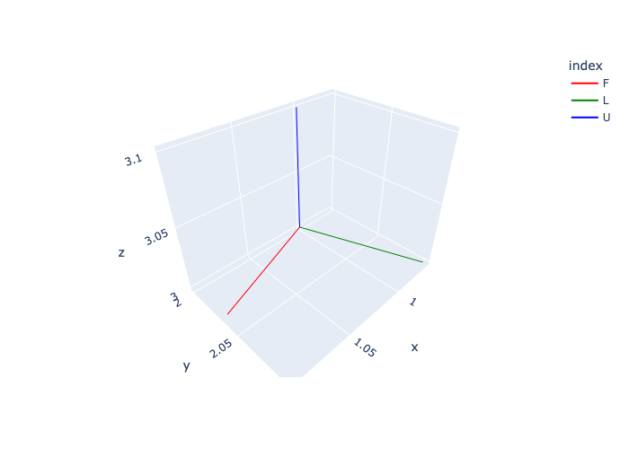
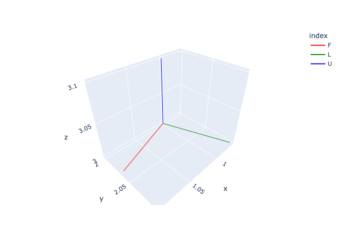
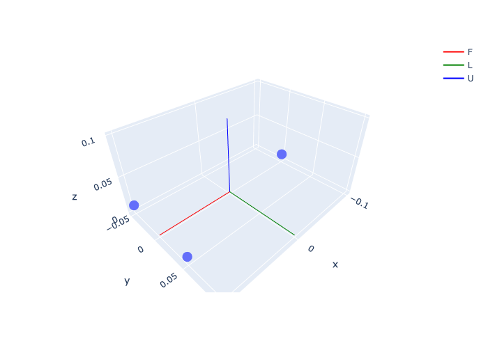
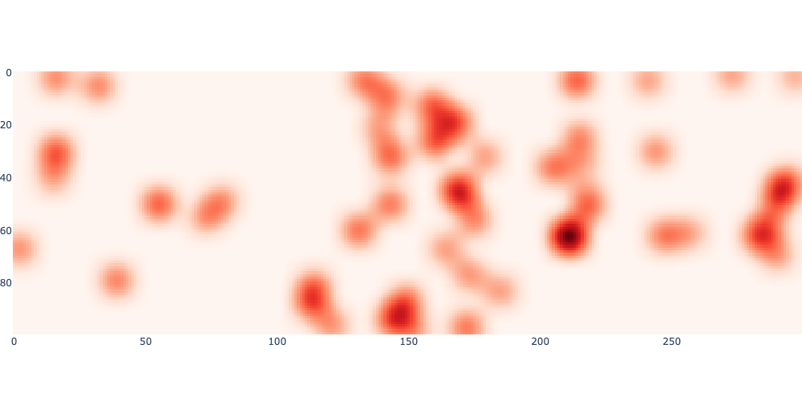
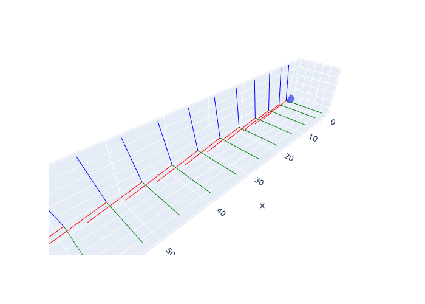

axes_figure(gtsam.Pose3(gtsam.Rot3.Yaw(math.radians(20)), [1,2,3]), scale=0.1, labels=["F","L","U"])
axes (*args, **kwargs)
Create 3 Scatter3d traces representing Pose3 coordinate frame.
axes_figure (pose:gtsam.gtsam.Pose3, scale:float=1.0, labels:list=['X', 'Y', 'Z'])
Create plotly express figure with Pose3 coordinate frame.
axes_figure(gtsam.Pose3(gtsam.Rot3.Yaw(math.radians(20)), [1,2,3]), scale=0.1, labels=["F","L","U"])
t1 = gtsam.Point3(0.1, 0.05, 0.01) # front-left
t2 = gtsam.Point3(0.1,-0.05, 0.01) # front-right
t3 = gtsam.Point3(-0.1, 0, 0.01) # back
fig = px.scatter_3d(x=[t1[0], t2[0], t3[0]], y=[t1[1], t2[1], t3[1]], z=[t1[2], t2[2], t3[2]])
fig.add_traces(axes(gtsam.Pose3(), scale=0.1, labels=["F","L","U"]))
fig.show()
An obstacle map:
create_random_map (W, H, num_obstacles=50, seed=42)
Creates a random occupancy map with the given dimensions and number of obstacles. Optionally, a seed can be provided to make the map reproducible.
For smoothing the cost map and optimizing over it:
gaussian_filter (sigma, uv, image, K=9)
Applies a Gaussian filter at uv on the given image.
gaussian_kernel (sigma:float, K:int=9)
Generates a Gaussian kernel of shape (1, 1, K, K) with standard deviation sigma.
displaced_gaussian (sigma:float, K:int, uv:numpy.ndarray)
Returns a Gaussian kernel of size K x K with standard deviation sigma. The kernel is centered at uv, a float coordinate in xy convention. Also returns the indices of the kernel in the image.
sigma = 0.5 # 0.5m standard deviation for the Gaussian kernel
K = 21 # 21x21 kernel is big enough to accommodate that standard deviation
kernel = gaussian_kernel(sigma*10, K) # multiply by 10 as map is 10cm resolution
batch = cost_map[None, None, ...] # Add batch and channel dimensions
blurred = torch.conv2d(batch, kernel, padding='same')[0, 0, ...]
fig = px.imshow(blurred, color_continuous_scale='Reds')
fig.update_layout(coloraxis_showscale=False, margin=dict(l=0, r=0, t=0, b=0), width=1000)
fig.show()
xy = gtsam.Point2(7.5, 5.3) # point in map, in meters
uv = 10*xy # continuous position in image
local_result = gaussian_filter(sigma*10, uv, cost_map, K)
print(f"Local cost at {xy} is {local_result:.3f}")
# When uv are at integer values, blurred image gives the same result:
assert np.allclose(local_result, blurred[int(uv[1]), int(uv[0])])Local cost at [7.5 5.3] is 0.135sobel_kernels (dtype=torch.float32, **kwargs)
Return Sobel gradient kernels sobel_u of shape (1, 1, 1, 3) and sobel_v of shape (1, 1, 3, 1).
A small class to fit a pseudo-spectral Chebyshev basis:
SmoothTrajectory (path:<built-infunctionarray>, N:int=5, a:float=-1, b:float=1, sample:bool=False, boundaries:bool=False)
Construct a polynomial fit of degree N-1, e.g. N=4 is a cubic. Args: path: An array of shape (K, 3) representing a 3D path. N: The number of control points. a: The lower bound of the time interval. b: The upper bound of the time interval. sample: If True, sample the path at N Chebyshev nodes of the second kind. boundaries: If True, constrain the start and end points to be constant velocity.
# Create a random path of shape (K, 3):
rng = np.random.default_rng(seed=42)
K = 100
path = rng.random((K, 3))
T = 20.0
# exercise various options:
smooth = SmoothTrajectory(path, N=20, a=0, b=T, boundaries=True)
assert smooth.points.shape == (20, 3)
smooth = SmoothTrajectory(path, N=20, a=0, b=T, boundaries=False)
assert smooth.points.shape == (20, 3)
smooth = SmoothTrajectory(path, N=20, a=0, b=T, sample=True)
assert smooth.points.shape == (20, 3)show_executed (desired_rn:numpy.ndarray, rn:numpy.ndarray, nRb:numpy.ndarray, K:int, step:int)
Show the executed trajectory in 3D.
Combine the two classes in 7.2 into one dataclass for use in 7.5.
Drone (rn:<function Point3>, vn:<function Point3>, nRb:gtsam.gtsam.Rot3, wb:<function Point3>, g:float=9.81, mass:float=1.0, k_d:float=0.0425, I_xy:float=0.006000000000000001, I_z:float=0.012000000000000002)
A simple drone model with 6DOF dynamics.
A drone pitching and accelerating forwards:
zero = lambda : gtsam.Point3(0, 0, 0)
pitch = math.radians(10)
f = 9.81 / math.cos(pitch)
drone = Drone(rn=zero(), vn=zero(), nRb=gtsam.Rot3.Pitch(pitch), wb=zero())
drone.integrate(f, zero(), dt=1)
print(drone)
assert np.allclose(drone.rn, gtsam.Point3(1.72976768, 0, 0))
assert np.allclose(drone.vn, gtsam.Point3(1.72976768, 0, 0))
assert np.allclose(drone.wb, gtsam.Point3(0, 0, 0))
fig = px.scatter_3d(x=[0], y=[0], z=[0])
scale, labels = 10, ["F", "L", "U"]
fig.add_traces(axes(drone.pose(), scale, labels))
for k in range(10):
drone.integrate(f, zero(), dt=1)
fig.add_traces(axes(drone.pose(), scale, labels))
fig.update_layout(showlegend=False, scene_aspectmode='data').show()Drone:
rn=[1.72976768 0. 0. ]
vn=[1.72976768 0. 0. ]
nRb=R: [
0.984808, 0, 0.173648;
0, 1, 0;
-0.173648, 0, 0.984808
]
wb=[0. 0. 0.]